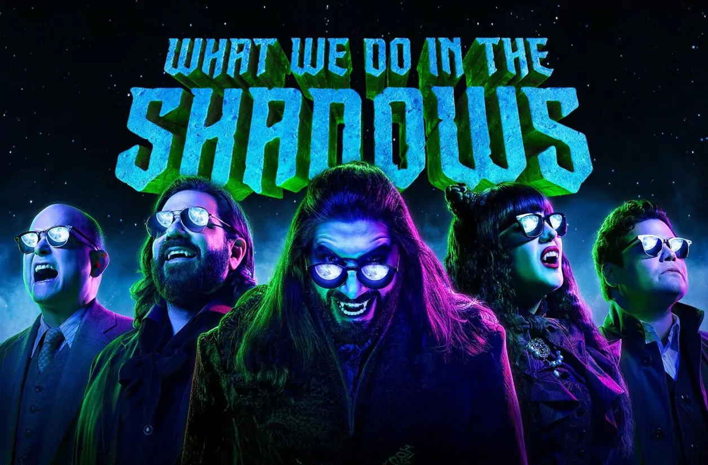

Series que te encantarán

Parks and Recreation
Sigue las aventuras de Leslie Knope y su equipo en el departamento de parques de Pawnee, Indiana.
Ver en Prime Video
Brooklyn Nine-Nine
Una comedia que sigue al detective Jake Peralta y sus colegas en el precinto 99 de Brooklyn. Humor inteligente y personajes memorables.
Ver en Netflix
Modern Family
Una comedia mockumentary que sigue a tres familias relacionadas mientras lidian con sus hijos, relaciones y vida cotidiana.
Ver en Disney+

What We Do in the Shadows
Un mockumentary que sigue a cuatro vampiros que viven juntos en Staten Island, lidiando con la vida moderna.
Ver en HuluDescubre por qué amarás estas series
Estilo Único
Formato mockumentary que te hará sentir parte de la historia
Personajes Memorables
Elencos carismáticos que te harán reír y emocionarte
Humor Inteligente
Comedia que mezcla lo absurdo con momentos emotivos
Éxito Garantizado
Series aclamadas por la crítica y el público